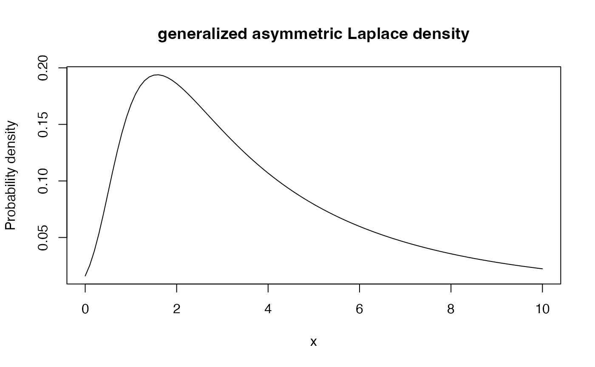

Density, distribution function, quantile function and
random generation for the generalized asymmetric Laplace distribution
with parameters mu, sigma and nu, delta.
Usage
dgal(x, delta, mu, nu, sigma, log = FALSE)
rgal(n, delta, mu, nu, sigma, seed = 0)
pgal(q, delta, mu, nu, sigma, lower.tail = TRUE, log.p = FALSE)
qgal(p, delta, mu, nu, sigma, lower.tail = TRUE, log.p = FALSE)Arguments
- x, q
vector of quantiles.
- delta
A numeric value for the location parameter.
- mu
A numeric value for the shift parameter.
- nu
A numeric value for the shape parameter.
- sigma
A numeric value for the scaling parameter.
- log, log.p
logical; if
TRUE, probabilities/densities \(p\) are returned as \(log(p)\).- n,
number of observations.
- seed
Seed for the random generation.
- lower.tail
logical; if
TRUE, probabilities are \(P[X\leq x]\), otherwise, \(P[X>x]\).- p
vector of probabilities.
Value
dgal gives the density, pgal gives the distribution function, qgal gives the quantile function, and rgal generates random deviates.
Invalid arguments will result in return value NaN, with a warning.
The length of the result is determined by n for rgal.
Details
The generalized asymmetric Laplace distribution has density given by $$f(x; p, a, b) = \frac{e^{\nu+\mu(x-\delta)/\sigma^2}\sqrt{\nu\mu^2/\sigma^2+\nu^2}}{\pi\sqrt{\nu\sigma^2+(x-\delta)^2}} K_1(\sqrt{(\nu\sigma^2+(x-\delta)^2)(\mu^2/\sigma^4+\nu/\sigma^2)}),$$ where \(K_p\) is modified Bessel function of the second kind of order \(p\), \(x>0\), \(\nu>0\) and \(\mu,\delta, \sigma\in\mathbb{R}\). See Barndorff-Nielsen (1977, 1978 and 1997) for further details.
If the mixing variable \(V\) follows a Gamma distribution (same parameterization in R): $$V \sim \Gamma(h \nu, \nu),$$ then the poserior follows the GAL distribution (a special case of GIG distribution): $$ -\mu +\mu V + \sigma \sqrt{V} Z \sim GIG(h \nu - 0.5, 2 \nu + (\frac{\mu}{\sigma})^{2}, 0) $$
References
Barndorff-Nielsen, O. (1977) Exponentially decreasing distributions for the logarithm of particle size. Proceedings of the Royal Society of London.
Series A, Mathematical and Physical Sciences. The Royal Society. 353, 401–409. doi:10.1098/rspa.1977.0041
Barndorff-Nielsen, O. (1978) Hyperbolic Distributions and Distributions on Hyperbolae, Scandinavian Journal of Statistics. 5, 151–157.
Examples
rgal(100, delta = 0, mu = 5, sigma = 1, nu = 1)
#> [1] 1.43316713 -0.35028455 1.36812010 0.68981038 3.68106940 0.07044475
#> [7] 14.41511348 1.98466595 0.08841599 5.64396232 4.11929630 1.17130037
#> [13] 3.96758724 3.17485625 11.52682647 1.87524916 3.05553697 1.41040902
#> [19] 1.47462306 1.55825338 1.36502037 9.94372450 0.27802939 25.60724977
#> [25] 3.27218958 6.15388746 3.39510631 4.55692376 0.09614731 2.47771983
#> [31] 2.88280108 4.28911485 9.22763605 5.18307944 3.49307030 1.31515050
#> [37] 8.99139320 0.48016600 13.49046583 0.56370115 1.01339170 0.91312819
#> [43] 2.26371718 7.19600973 2.78502800 22.07363128 0.39343921 9.75708279
#> [49] 12.12175307 0.43447202 3.97159065 8.13789983 8.77965668 2.54523996
#> [55] 0.49837506 1.26130100 -0.02436827 0.72959554 15.23987708 11.52918010
#> [61] 0.64195588 9.74218476 0.29953436 11.88382356 4.21092632 0.76184827
#> [67] 3.13940016 2.26478494 13.19603865 2.32034343 12.11842433 9.29018586
#> [73] 14.40448074 4.13165579 22.41114140 7.32237857 1.00260921 7.59626718
#> [79] 7.27643007 4.15348850 1.20922696 0.89365412 3.83634083 12.41087022
#> [85] 1.24708404 5.00904024 1.91355357 3.04531232 4.92758095 1.78622524
#> [91] 2.21415354 1.36336917 5.71152369 23.84717748 2.65997214 8.22862046
#> [97] 5.12960059 8.81046395 1.35842094 8.77053585
pgal(0.4, delta = 0, mu = 5, sigma = 1, nu = 1)
#> [1] 0.9989855
qgal(0.8, delta = 0, mu = 5, sigma = 1, nu = 1)
#> [1] 0.06083445
plot(function(x){dgal(x, delta = 0, mu = 5, sigma = 1, nu = 1)}, main =
"generalized asymmetric Laplace density", ylab = "Probability density",
xlim = c(0,10))
